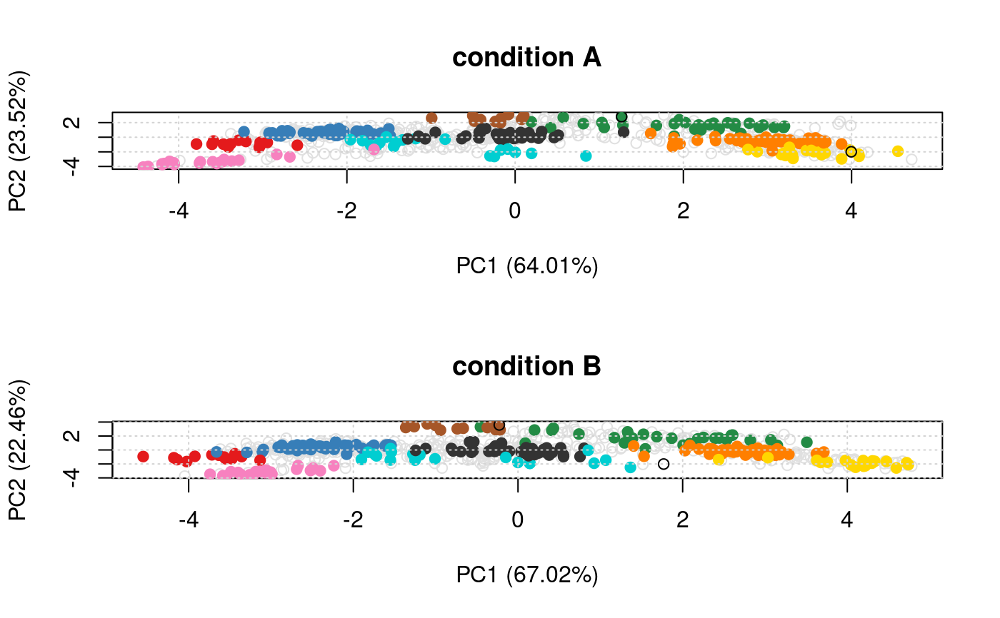

Given two MSnSet instances of one MSnSetList with at
least two items, this function produces an animation that shows
the transition from the first data to the second.
move2Ds(object, pcol, fcol = "markers", n = 25, hl)
| object | An |
|---|---|
| pcol | If |
| fcol | Feature meta-data label (fData column name) defining
the groups to be differentiated using different colours. Default
is |
| n | Number of frames, Default is 25. |
| hl | An optional instance of class
|
Used for its side effect of producing a short animation.
plot2Ds to a single figure with the two
datasets.
library("pRolocdata") data(dunkley2006) ## Create a relevant MSnSetList using the dunkley2006 data xx <- split(dunkley2006, "replicate") xx1 <- xx[[1]] xx2 <- xx[[2]] fData(xx1)$markers[374] <- "Golgi" fData(xx2)$markers[412] <- "unknown" xx@x[[1]] <- xx1 xx@x[[2]] <- xx2 ## The features we want to track foi <- FeaturesOfInterest(description = "test", fnames = featureNames(xx[[1]])[c(374, 412)]) ## (1) visualise each experiment separately par(mfrow = c(2, 1)) plot2D(xx[[1]], main = "condition A") highlightOnPlot(xx[[1]], foi) plot2D(xx[[2]], mirrorY = TRUE, main = "condition B")#> Error in assign("stockcol", cols, envir = .pRolocEnv): cannot change value of locked binding for 'stockcol'#> Error in data1(tmp): object 'tmp' not found#> Error in data2(tmp): object 'tmp' not found## (3) create an animation move2Ds(xx, pcol = "replicate")#> Error in assign("stockcol", cols, envir = .pRolocEnv): cannot change value of locked binding for 'stockcol'move2Ds(xx, pcol = "replicate", hl = foi)#> Error in assign("stockcol", cols, envir = .pRolocEnv): cannot change value of locked binding for 'stockcol'